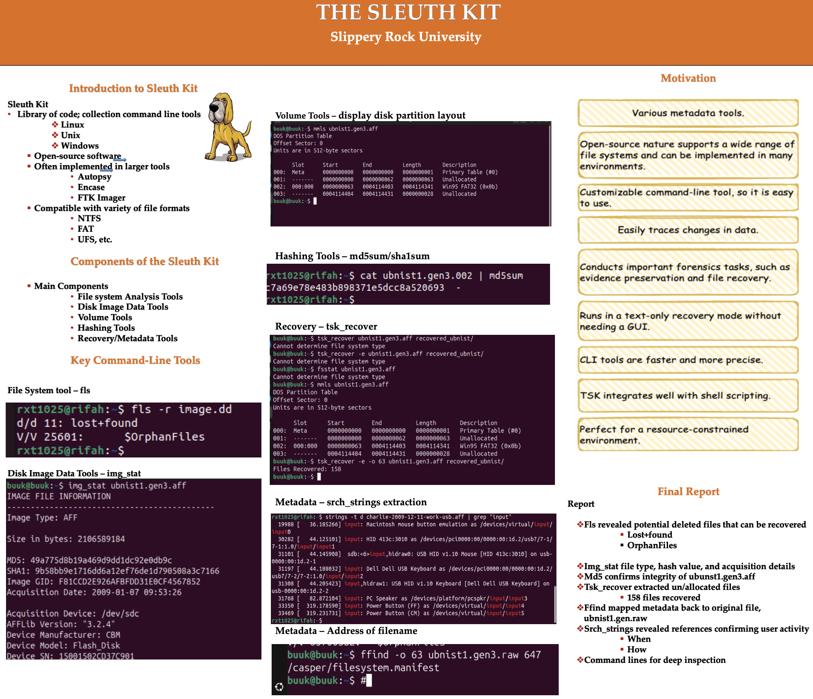

Throughout my time at college, I received few awards. I recieved these scholarships for my academic exellence throughout the entire two years of college.
Recent Projects

The QuizMaker

Tic-Tac-Toe
The first project that I have worked on called "The Quiz Maker". On this project, the user will answer few question within the specified time.
Afterward, the application will provide a score and detailed results at the end of the quiz.
The second project that I have worked on called "Tic-Tac-Toe". Requires user to select a spot between 1 to 9.
If the opponent player already took the spot it will ask the user to enter a number again. At the end, the results will
tell whether it's a tie or not.
Certificates


I successfully completed my Junior, Secondary and Higher Secondary School certificate with a GPA of 5.00 in the scale of 5.00
Research

I performed a team research on a very powerful open-source digital forensics tool
called Sleuth Kit tool.
The main idea behind this tool is to demontrate
how the use of a sleuth Kit tool can be crucial in digital forensic investigation. Moreover,
how the Sleuth Kit recovers deleted files.Throughout this research, I gained valuable hands-on
experience in file system analysis, and I have learned how digital investigators work behind the scenes.